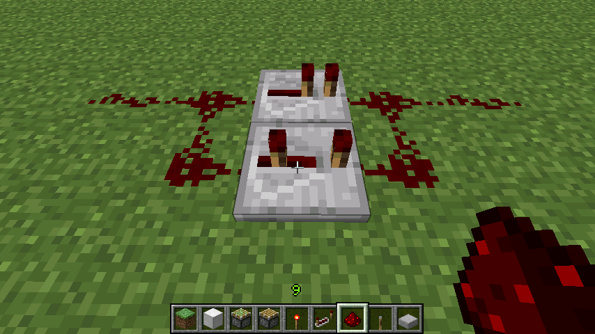
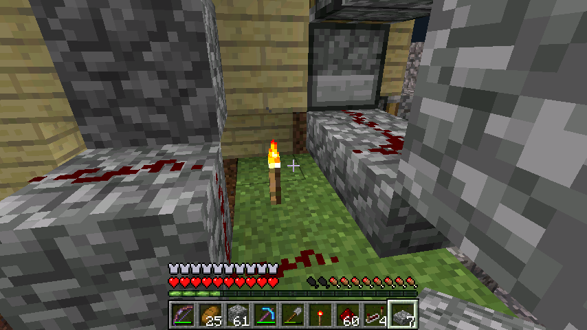

首页
上一页
99
100
101
102
103
104
104
105
106
107
108
109
下一页
末页
defanive2
无尽黑夜
14
接下来BUD的中间状态的输出，我们连接到左推和右推的活塞组
6435楼
2012-09-15 14:11
defanive2
无尽黑夜
14
好的现在在创造模式演示一下1.3里面的一个新红石电路
由于现在红石可以放在一些特定的非实体方块上，电路有了很多很新奇的特征
最常见的就是无延时半导体
由于在半砖不是实体方块，半砖上的红石就被认为是浮空的，没有和向下的红石连接
因此就产生了无延时半导体
这样允许电流只从一个方向通过，既向上进入非实体方块的方向
PS 最常用于此类应用的非实体方块是倒置的鹅卵石半砖
6436楼
2012-09-15 14:16
defanive2
无尽黑夜
14

这种非对称电路大家一定很熟悉，左侧为输入，右侧为输出
这样产生的效果是，OFF->ON时延时1tick，ON->OFF时延时3tick，造成了不对称
这种电路很多情况下可以替代ABBA电路使用
6437楼
2012-09-15 14:17
defanive2
无尽黑夜
14
有了半导体电路之后，1.3的非对称电路可以做到无OFF->ON延时
对于精确控制时间差是很有用的
6438楼
2012-09-15 14:19
defanive2
无尽黑夜
14
这时我们把BUD第二状态的输出电路连接到一个非对称电路和NOT门，输出给左侧的2个活塞
这样做到的是，BUD激活后1tick活塞就开始收缩，空出位置让羊进入
注意，上推活塞是在BUD激活后2tick开始收缩的，因此这个收缩必须要在1tick的时候发生
如果没有1.3这个无延时半导体电路的话，那么设计就要复杂得多了（由于这种BUD的最大时间差只能是4tick，增大延时导致要换BUD设计）
6439楼
2012-09-15 14:24
defanive2
无尽黑夜
14
BUD第二状态的输出也连接到右边的活塞，同样是连接到一个不对称电路
6445楼
2012-09-15 14:27
defanive2
无尽黑夜
14
至此机器的主题部分就已经完成了，测试一下
在草地上放一个红石激发BUD，可以看到左侧活塞和右侧活塞先分别收缩和伸出，让羊移动到左侧的仓室
然后下方的草地被向下拉，进入队列，然后整个队列逆时针旋转，新的草地被放入
之后新的草地被上推，然后左侧和右侧的活塞分别伸出和收缩，把羊归位
6448楼
2012-09-15 14:31
defanive2
无尽黑夜
14
最后再封装一下
前面是放羊的地方，爬楼梯上去右侧是剪羊毛的地方
6451楼
2012-09-15 14:36
defanive2
无尽黑夜
14
装潢成白桦木板
半砖是为了防止不小心掉进羊仓里面
6453楼
2012-09-15 14:51
defanive2
无尽黑夜
14
给加了一个楼梯间
6454楼
2012-09-15 14:52
defanive2
无尽黑夜
14
加装一个踏板
这个踏板的作用就是，踩的时候会放水和收水
这样上去的时候放水，羊就会往上跳，这样我们就能很方便的剪羊毛
下去的时候又会收水，这样羊就能继续吃草长回羊毛了
6456楼
2012-09-15 14:57
defanive2
无尽黑夜
14

6457楼
2012-09-15 15:02
defanive2
无尽黑夜
14
踏板的电路不说了，很简单，一个中继器充能下传，然后直接传给发射器
注意的是草地上应该用半砖，这样能保证草皮不被破坏
6458楼
2012-09-15 15:02
defanive2
无尽黑夜
14
第一次踩踏板就会放水，第二次就会收回
6459楼
2012-09-15 15:03
defanive2
无尽黑夜
14
接下来在创造模式演示一个很常用的电路，用于限制信号的长度
原理很简单，电流通过后，被中继器延时1tick，然后激发活塞，切断电路
因此产生了1tick的脉冲，无论输入电流的长短
wiki上的名字叫pulse-limiter，有非活塞的设计
活塞设计相对更加灵活一点，占地面积也相对小
6462楼
2012-09-15 15:08
defanive2
无尽黑夜
14
在这里加一个按钮，作为手动旋转队列
这样当有时候草皮过了一个轮回还没长出来，但是又急需的时候可以按一下按钮马上旋转队列，切换到下一个草皮
思路也很简单，激发一次BUD就可以了
6463楼
2012-09-15 15:10
defanive2
无尽黑夜
14
按钮产生的脉冲是1s的，而我们的BUD是0.4s的
因此直接把信号传送过去会激发2次BUD
因此先缩短信号长短到1tick
6465楼
2012-09-15 15:13
defanive2
无尽黑夜
14
缩短了脉冲之后一直连过来，然后离活塞1格远的地方放中继器
中继器和活塞中间没有任何东西
这样为什么可以实现更新BUD呢？
中继器可以更新半径2格内的红石效应器
因此这样做，不仅更新了活塞，而且中继器的信号没有影响到BUD的运行
除了这种方法更新BUD以外还可以通过物品直接更新，例如红石激活各种门，加速铁轨，红石灯等
6467楼
2012-09-15 15:19
defanive2
无尽黑夜
14
测试一下按钮，正常工作，成功更新了队列
6468楼
2012-09-15 15:20
defanive2
无尽黑夜
14
草的传播速度还是挺慢的，做了这么久了还有一半的泥土没长草
现在只需要等草长完，然后抓羊进去就可以正常运作了
6469楼
2012-09-15 15:23
defanive2
无尽黑夜
14
从背面看电路布线，挺简单的电路但是由于空间很小结果密密麻麻。。
地下建造就麻烦死了，虽然会好看很多
毕竟裸露的线路实在是太煞风景了
6470楼
2012-09-15 15:25
defanive2
无尽黑夜
14
好了今天就玩到这里吧，好晚了要去睡觉了。。
明天抓几只羊，染色之后就扔进羊仓里面就可以了
打算一种颜色的羊放3只进去，这样一共就是48只羊
喜欢的颜色可以再加几只进去
总之羊毛也算是可以较高速生产了
回复一下大家就去睡觉
6471楼
2012-09-15 15:29
defanive2
无尽黑夜
14
我擦这行字真长。。
6509楼
2012-09-16 01:01
defanive2
无尽黑夜
14
帮忙做了午饭一起吃。。
继续打MC
6515楼
2012-09-16 02:03
defanive2
无尽黑夜
14
造好一个简单的羊圈，先繁殖好指定数量然后全部推到羊仓里面
左侧是到羊仓的屋顶，右侧是到地面
6518楼
2012-09-16 02:25
defanive2
无尽黑夜
14
凑齐16种染色剂，2到3个
准备每种颜色的羊都放3只进去
6519楼
2012-09-16 02:30
defanive2
无尽黑夜
14
来到羊场
6520楼
2012-09-16 02:33
defanive2
无尽黑夜
14
周围就有几只羊，马上拐卖
6522楼
2012-09-16 02:36
defanive2
无尽黑夜
14
诱拐上楼梯
6523楼
2012-09-16 02:38
defanive2
无尽黑夜
14
3只羊
6524楼
2012-09-16 02:41
首页
上一页
99
100
101
102
103
104
104
105
106
107
108
109
下一页
末页